x3
x3 x3
x3 x3
x3 x2
x2 x2
x2 x3
x3 x2
x2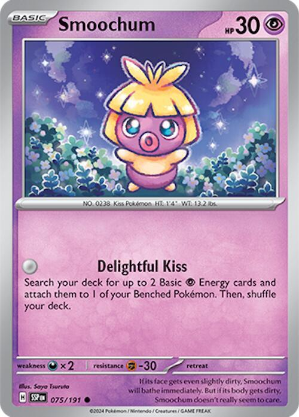
x2

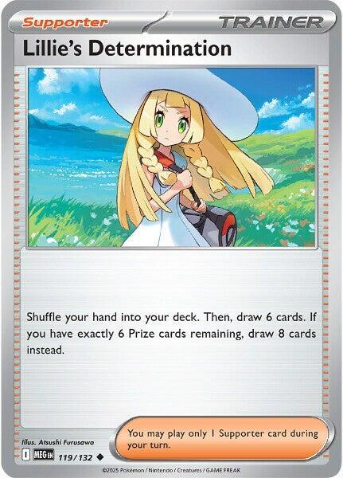
x4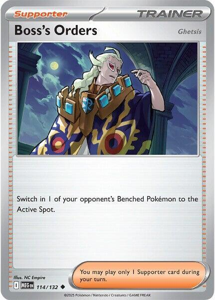
x3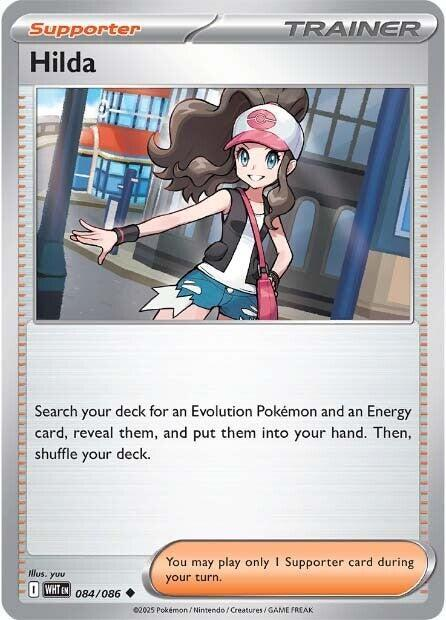
x2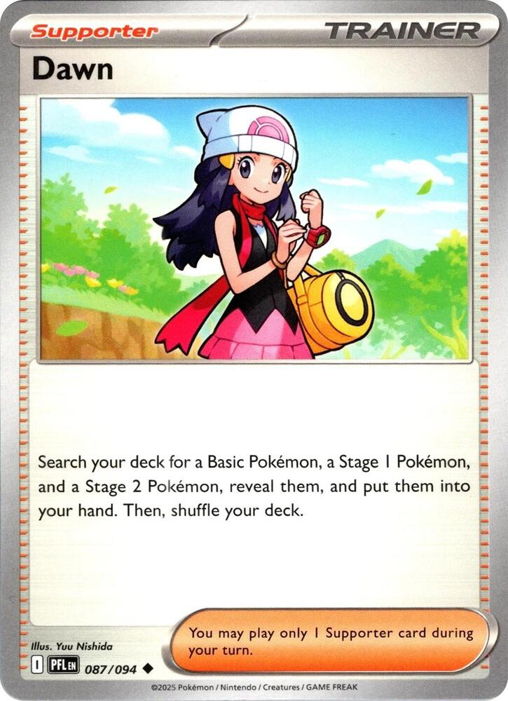
x2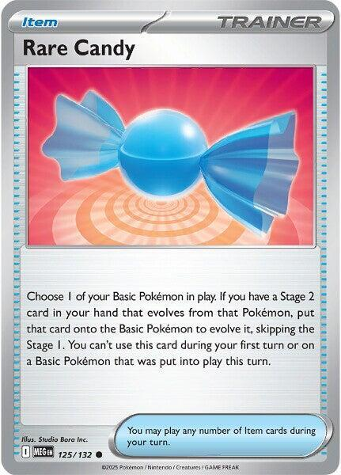
x4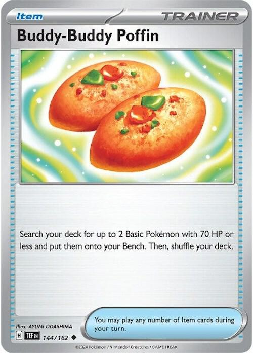
x4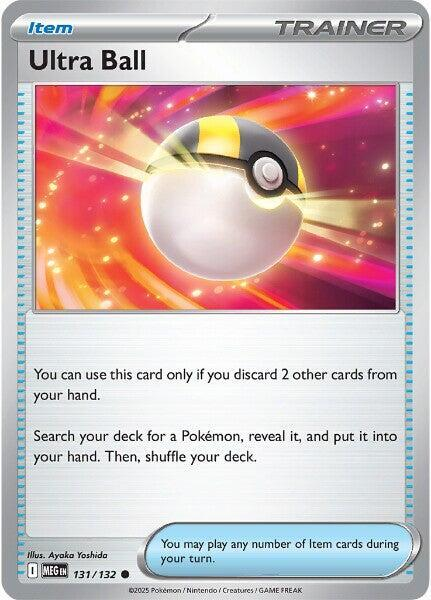
x2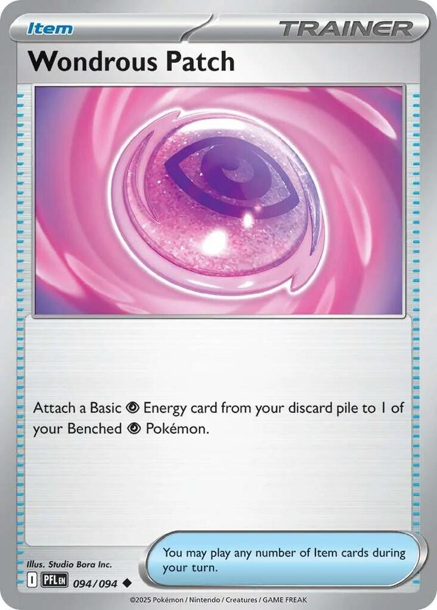
x2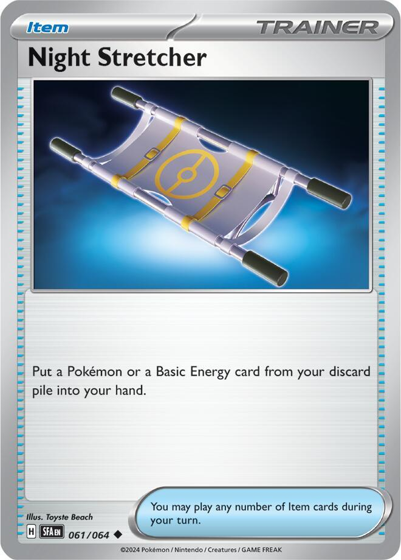
x2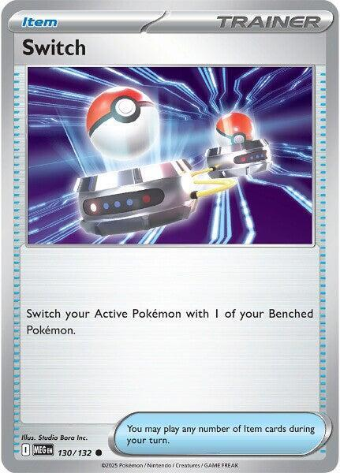
x2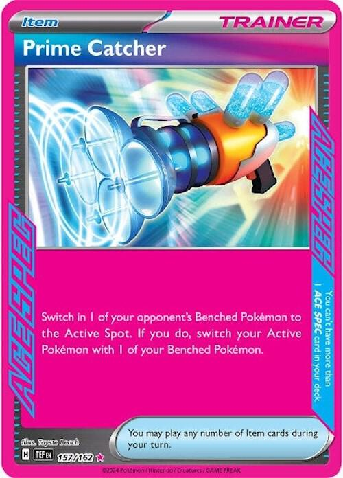
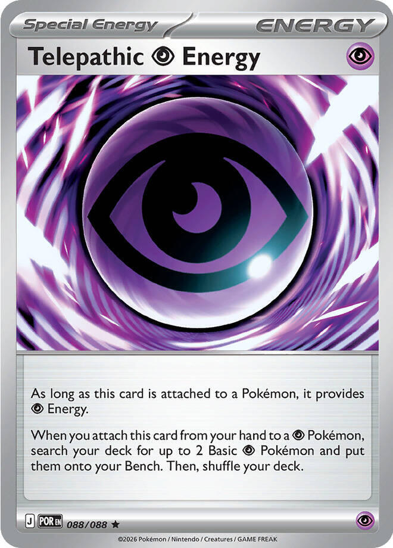
x4 x6
x6 Xero's Lanterns Reborn
Xero's Lanterns Reborn 

Witching Hour, rebuilt tournament legal around Mega Chandelure ex
Mega Chandelure ex reads like a midrange attacker and plays like a trap.
Phantom Maze does 130 plus 50 for each [C] in the opponent's Active Pokémon's Retreat Cost, and its own Ability, Binding Flame, adds one to that cost. So the damage is not a number; it is a question: what is standing in front of it, and how much does that thing weigh?
| Their Active's printed Retreat | With Binding Flame | Phantom Maze |
|---|---|---|
| 0 | 1 | 180 |
| 1 | 2 | 230 |
| 2 | 3 | 280 |
| 3 | 4 | 330 |
| 4 | 5 | 380 |
A good opponent answers this by keeping something light up front, and against a free-retreat pivot the attack floors at 180. That is why the deck's real engine is not the attack; it is choosing their Active for them. Boss's Orders or Prime Catcher drags the heavy thing forward, Binding Flame makes it heavier, Phantom Maze hits it for 330 or 380, and the retreat cost that made it a safe benchwarmer is what killed it. 380 one-shots every card printed, including the 380 HP Megas.
Around that trap, the deck keeps Witching Hour's soul: Dusknoir places 13 damage counters in one burst, Froslass places one on every Ability Pokémon each Checkup, and Gourgeist ex converts the damage on your own Bench into a one-Energy attack. Counters ignore Weakness and Resistance, exactly as they always did.
x3x3x3x2x2x3x2
x2
x4
x3
x2
x2
x4
x4
x2
x2
x2
x2

x4x6Pokémon (22)
| Qty | Card | Set | Number | Reg |
|---|---|---|---|---|
| 3 | Litwick | Pitch Black | 036 | J |
| 3 | Lampent | Pitch Black | 037 | J |
| 3 | Mega Chandelure ex | Pitch Black | 038 | J |
| 2 | Pumpkaboo | Chaos Rising | 040 | J |
| 2 | Gourgeist ex | Chaos Rising | 041 | J |
| 3 | Duskull | Shrouded Fable | 018 | H |
| 2 | Dusknoir | Shrouded Fable | 020 | H |
| 2 | Smoochum | Surging Sparks | 075 | H |
| 1 | Snorunt | Twilight Masquerade | 051 | H |
| 1 | Froslass | Twilight Masquerade | 053 | H |
Trainers (28)
| Qty | Card | Type | Set | Number | Reg |
|---|---|---|---|---|---|
| 4 | Lillie's Determination | Supporter | Mega Evolution | 119 | I |
| 3 | Boss's Orders | Supporter | Mega Evolution | 114 | I |
| 2 | Hilda | Supporter | White Flare | 084 | I |
| 2 | Dawn | Supporter | Phantasmal Flames | 087 | I |
| 4 | Rare Candy | Item | Mega Evolution | 125 | I |
| 4 | Buddy-Buddy Poffin | Item | Temporal Forces | 144 | H |
| 2 | Ultra Ball | Item | Mega Evolution | 131 | I |
| 2 | Wondrous Patch | Item | Phantasmal Flames | 094 | I |
| 2 | Night Stretcher | Item | Shrouded Fable | 061 | H |
| 2 | Switch | Item | Mega Evolution | 130 | I |
| 1 | Prime Catcher | Item | Temporal Forces | 157 | H |
Energy (10)
| Qty | Card | Set | Number | Reg |
|---|---|---|---|---|
| 4 | Telepathic Psychic Energy | Perfect Order | 088 | J |
| 6 | Basic Psychic Energy | Mega Evolution Energies | 005 | - |
22 + 28 + 10 = 60. ✓
Basics: 11 (3 Litwick, 2 Pumpkaboo, 3 Duskull, 2 Smoochum, 1 Snorunt), for about a 22% mulligan rate. The earlier build ran 10 Basics and 13 Energy and mulliganed a quarter of its games; trading three Energy for two Smoochum and a deeper trainer count bought both a steadier open and a faster one. Every Basic is 70 HP or under, so all four Poffins stay live, and four of the five are Basic Psychic, so Telepathic Energy fetches them too.
Generic staples are covered in Gengar Gang and the Dark Box; this section covers the lanterns.


 Psychic
Psychic Darkness ×2
Darkness ×2 Fighting -30
Fighting -30 2
2 legalPhantom Maze (130+) - This attack does 50 more damage for each Retreat Cost.
legalPhantom Maze (130+) - This attack does 50 more damage for each Retreat Cost.Stage 2 from Lampent. Gives up 3 Prize cards. 350 HP, and the stat line has two quiet gifts: Resistance to Fighting, which is the type that hunts Mega Gengar, and a Darkness Weakness that matters exactly once in this house (see the kitchen-table section).
Binding Flame needs no Energy and no activation; it sits there making every retreat more expensive and every Phantom Maze 50 harder. It works from the Bench, so a Chandelure that is not attacking is still doing its job.
It stacks, and that is settled. The Pokémon website's own Pitch Black strategy piece says the plain version: "Playing multiple copies of Mega Chandelure ex is the easiest way to continue boosting Phantom Maze's damage." Two in play is +2 to their Retreat Cost and +100 to the attack. An earlier draft of this file hedged on that; it should not have.
Three copies in the list is the ceiling on purpose. Each one on the board is another three Prizes standing in the open, and the second Binding Flame buys far more than the third. See game plan 5.
 PsychicDarkness ×2Fighting -301legalWill-O-Wisp (20)
PsychicDarkness ×2Fighting -301legalWill-O-Wisp (20)The Basic the deck stands on, and the only Psychic Litwick ever printed — the White Flare and Twilight Masquerade prints are Fire and cannot pay a [P] cost or share a searcher's type filter sensibly. 70 HP keeps it inside Poffin range.
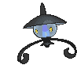
 PsychicDarkness ×2Fighting -301legalSpreading Light - Search your deck for up to 3 Lampent and put them onto your Bench. Then, shuffle your deck.
PsychicDarkness ×2Fighting -301legalSpreading Light - Search your deck for up to 3 Lampent and put them onto your Bench. Then, shuffle your deck.Spreading Light is the endgame in one attack: search your deck for up to 3 Lampent and bench them. It is why this deck runs a fat 3 Lampent instead of treating the Stage 1 as a bridge, and why one attack on turn two can set up every Mega Chandelure the deck will ever need. See game plan 4.

 PsychicDarkness ×2Fighting -302legalStampede (20)
PsychicDarkness ×2Fighting -302legalStampede (20)The pumpkin returns. 60 HP, Poffin-legal, and its whole job is becoming Gourgeist ex.
PsychicDarkness ×2Fighting -302legalHorrifying Rondo (30+) - This attack does 50 more damage for each of your Benched Pokémon that has any damage counters on it.Ghostly Touch (140) - Discard a random card from your opponent's hand.Stage 1, 270 HP, 2 Prizes. Horrifying Rondo does 30 plus 50 for each of your Benched Pokémon that has damage on it — your Bench, not theirs. In most decks that clause is dead text. In this one, Froslass lightly wounds your own Ability Pokémon every Checkup, and suddenly a one-Energy attack does 130 to 230. Ghostly Touch is the other half: 140 and a random card ripped from their hand, for two Energy, with no setup at all.
 PsychicDarkness ×2Fighting -301legalCome and Get You - Put up to 3 Duskull from your discard pile onto your Bench.Mumble (30)
PsychicDarkness ×2Fighting -301legalCome and Get You - Put up to 3 Duskull from your discard pile onto your Bench.Mumble (30)60 HP seed. Come and Get You puts up to 3 Duskull from the discard onto your Bench, which quietly makes every discarded Duskull a future Dusknoir rather than a lost card.
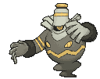
 PsychicDarkness ×2Fighting -303legalShadow Bind (150) - During your opponent's next turn, the Defending Pokémon can't retreat.
PsychicDarkness ×2Fighting -303legalShadow Bind (150) - During your opponent's next turn, the Defending Pokémon can't retreat.The thirteen-counter button. Once during your turn: put 13 damage counters on one of your opponent's Pokémon, anywhere on their board, and Dusknoir Knocks itself Out. That is 130 placed damage that ignores Weakness, Resistance, and the Bench, from a card that cost you one Prize and no attack. It also has a real attack — Shadow Bind, 150 and the Defending Pokémon cannot retreat, which is a second way to spring the retreat trap.

 Water
Water Metal ×21legalAstonish (20) - Choose a random card from your opponent's hand. Your opponent reveals that card and shuffles it into their deck.
Metal ×21legalAstonish (20) - Choose a random card from your opponent's hand. Your opponent reveals that card and shuffles it into their deck.60 HP, Poffin-legal, and Astonish shuffles a random card from their hand into their deck if you are truly stuck for a turn-one play. It exists to become Froslass.
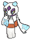
WaterMetal ×21legalFrost Smash (60)Freezing Shroud: at every Pokémon Checkup, put 1 damage counter on each Pokémon that has an Ability, both yours and theirs, except any Froslass. Read what that does here twice. Their board is full of Ability Pokémon, so it is a global slow poison. Your board is full of Ability Pokémon too, and that is the point: every ping on your own Chandelure and Dusknoir is 50 more damage on Horrifying Rondo. The deck is the rare home where Freezing Shroud's friendly fire is a feature.
Water type, so it pays no Psychic cost and shares no searcher, and a 1-1 line is deliberately thin. It is the first cut if the Rondo plan underperforms and the first upgrade to 2-2 if it carries games.
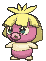
PsychicDarkness ×2Fighting -30legalThirty hit points, no Retreat Cost, and the most important attack in the deck. Delightful Kiss costs nothing at all: search your deck for up to 2 Basic Psychic Energy and attach them to one of your Benched Pokémon.
Read the sequence twice, because it is a full turn faster than anything the old list could do. Bench a Litwick, put Smoochum in the Active Spot, and Delightful Kiss two Energy onto the Litwick. Next turn, Rare Candy that Litwick into Mega Chandelure ex, which inherits the Energy, walk Smoochum away for free, and attack. Turn two Phantom Maze.
The part that matters most is where the Energy comes from. It comes from the deck, not your hand, so the card works on the turn you have drawn no Energy at all. Thirty hit points means it dies to a stiff breeze and hands over a Prize, and by then it has already done the job it was bought for. It is Basic Psychic, so Telepathic Energy finds it, and 30 HP, so Poffin does too.
 legal
legalAn Energy card that is also a Poffin. It provides [P], and when you attach it from hand to a Psychic Pokémon you search your deck for up to 2 Basic Psychic Pokémon and put them straight onto your Bench. Litwick, Pumpkaboo, Duskull, and Smoochum all qualify. Snorunt does not, because it is Water.
Four copies, and no more, for one reason: it is a Special Energy, so neither Wondrous Patch nor Night Stretcher can ever recover it. It is a setup card, not a resilience card, and the six basic Psychic underneath it are what keep the recovery loop alive.
 legal
legalSearch your deck for an Evolution Pokémon and an Energy card. In this deck that reads "Mega Chandelure ex plus a Telepathic Energy," off one Supporter, which is the exact pair the deck spends its early turns hunting for.
 legal
legalThe rebuild card. Attach a basic Psychic Energy from your discard pile to one of your Benched Psychic Pokémon. It is an Item, and it does not use your attachment for the turn.
This is the answer to the way this deck actually loses: a Mega Chandelure gets knocked out holding two Energy, and you hand over three Prizes and start the climb again from nothing. Wondrous Patch builds the replacement on the Bench while the current one is still swinging.
It also inverts Ultra Ball. Pitching a Psychic Energy to pay Ultra Ball's cost stops being a loss and becomes setup, because the Patch puts it back where you needed it.
 legal
legalThe ACE SPEC: gust their Bench and switch your own Active in one Item, no Supporter spent. In most decks it is tempo. In this one it is the trap trigger — pull the retreat-3 tank forward on the same turn Chandelure steps up, and the Supporter slot is still free for Lillie's.
The first version of this deck ran 13 basic Psychic and nothing else. No search, no acceleration, and no recovery past two Night Stretcher. That is not an Energy plan. It is a hope, and it is the same shape that lost a real game at the kitchen table while this file sat unrevised.
Energy count and Energy velocity are different numbers, and only one of them wins games. There are three jobs, and the old list did none of them.
| Job | Card | What it does |
|---|---|---|
| Find | 4 Telepathic Psychic Energy | an Energy that also benches two Basic Psychic Pokémon |
| Find | 2 Hilda | an Evolution Pokémon and an Energy card, together |
| Accelerate | 2 Smoochum | two Energy from the deck onto your Bench, for no Energy cost |
| Rebuild | 2 Wondrous Patch | one Energy from the discard onto your Bench, no attachment spent |
| Recover | 2 Night Stretcher | a Pokémon or a basic Energy back to hand |
The count came down from 13 to 10 and the deck gets fuel faster. Three slots went to the trainer line, which needed them more.
The fast open. Going second, bench a Litwick and open with Smoochum. Delightful Kiss puts two Psychic on the Litwick from your deck. Turn two, Rare Candy it into Mega Chandelure ex, retreat Smoochum for free, and swing. Going first you lose a turn to the no-attack rule and the line lands on turn three instead, which is still where the old list arrived on a good draw.
The slow open. Without Smoochum, one attachment a turn onto a benched Litwick gets Phantom Maze online turn three anyway. Smoochum is the upgrade, not the requirement, which is why two copies is enough.
The deck's main line, and the reason it wins games it looks behind in.
The targets worth dragging are the ones every deck benches and babies: the fat Stage 2, the 340 HP Mega charging up, the support Pokémon with retreat 2 that never planned to fight. Their printed retreat cost is the targeting computer. Learn your opponents' retreat costs the way the dark deck learns Bench counts.
Against decks that keep a free-retreat pivot up front, do not feed the 180 floor more than you must. Every gust effect in the deck exists to go around that pivot, and Shadow Bind (Dusknoir's attack) pins whatever is up front so the pivot never comes back out.
Gourgeist ex is the cheapest big attack in the deck, and your own Froslass is its supply line.
Freezing Shroud pings every Ability Pokémon at every Checkup. After two Checkups with a normal board (two Chandelure and a Dusknoir benched, all lightly singed), Horrifying Rondo reads: 30 + 50 + 50 + 50 = 180, for one Energy, from a 270 HP Stage 1 worth only 2 Prizes. With a fourth damaged bencher it is 230.
The counters on your own board are almost free. Chandelure has 350 HP; ten damage a turn is noise. The one real cost is on Gourgeist ex itself (it has no Ability, so it is never pinged, but it is 270 HP in an ex fight) — trade it while it is ahead.
Dusknoir is Witching Hour's Cursed Shadow, graduated.
Thirteen counters, placed anywhere on their board, once, then Dusknoir dies. The three uses, best first:
The price is honest: your opponent takes a Prize for the self-KO. Two Dusknoir plus Come and Get You on the Duskulls means the button exists roughly three times a game if you want it, but every press hands over a sixth of their win. Press it to convert, not to vent.
One attack that sets up the rest of the game.
Turn two, if the trap is not ready and the board is thin: Lampent Active, one Psychic, Spreading Light — up to 3 Lampent from the deck straight onto the Bench. Next turn those are Rare Candy targets and Mega Chandelure is no longer a card you draw; it is a card you schedule.
A deck with a 3 Prize core cannot afford to whiff its own arrival, and this is the card that guarantees it never does. Fetch all three Lampent even when you only need one; benched Lampent are Froslass ping targets that feed the Rondo, and a 90 HP body is a fine thing for an ex deck to waste an attack on.
Play it knowing the bill.

Fox's Charizard deck finally meets its one-shot. Charizard's retreat cost is 3; under Binding Flame that is 4, and Phantom Maze does 330 into 170 HP. The deck that needed a two-turn Weezing fuse to answer Charizard now answers it with one attack — massive overkill, delivered by a lantern. His Royal Blaze at 150 cannot two-shot a 350 HP Chandelure fast enough.
Fox's Team Rocket's Mewtwo deck walks into the same trap. Team Rocket's Mewtwo ex has retreat 3: Binding Flame makes it 4, Phantom Maze does 330 into its 280 HP — a clean one-shot on his best Pokémon, worth 2 Prizes. His Crobat ex (retreat 1) is the pivot problem in miniature: 230 into 310 HP is a two-shot, and Assassin's Return is a Darkness attack hitting Chandelure's Weakness for 240 a swing. Trade Gourgeist and counters into Crobat; save Phantom Maze for the heavy things.
Against your own dark decks, this deck is the underdog on purpose. Every Gengar and Weezing in the house strikes its Darkness Weakness. That is not a flaw; that is the rock-paper-scissors the table needed.
The lantern lines are all new; the trainer shell is already on the shelf. Four cards on this list were not here before, and they are the ones that fix the deck rather than decorate it: Smoochum, Telepathic Energy, Hilda, and Wondrous Patch.
| Card | Own | Need | Buy | Note |
|---|---|---|---|---|
| 0 | 3 | 3 | the Psychic print; your Fire Litwick do not serve this line |
| 0 | 3 | 3 | Spreading Light |
| 0 | 3 | 3 | Double Rare; skip the collector prints numbered above 084 |
| 1 | 2 | 1 | |
| 0 | 2 | 2 | Double Rare, same trap as above; 041, not 102 |
| 0 | 3 | 3 | |
| 0 | 2 | 2 | Rare Candy is the only route now, Dusclops is cut |
| 0 | 2 | 2 | a common; the whole Energy plan turns on it | |
| 0 | 1 | 1 | |
| 0 | 1 | 1 | |
 | 11 | 4 | ✓ | shared with the other decks |
| 10 | 3 | ✓ | shared |
| 0 | 2 | 2 | an Evolution and an Energy on one Supporter |
| 4 | 2 | ✓ | shared |
| 10 | 4 | ✓ | shared; stays at 4 because Dusknoir needs it |
| 9 | 4 | ✓ | shared; a third deck oversubscribes the 9 owned, buy 3 if all stay sleeved |
| 10 | 2 | ✓ | shared |
| 0 | 2 | 2 | the rebuild card; POR 117 is the same card |
| 10 | 2 | ✓ | shared |
| 7 | 2 | ✓ | |
| 0 | 1 | 1 | ACE SPEC; the English print, the Japanese copy is not US-legal |
| 0 | 4 | 4 | Special Energy, so Night Stretcher cannot bring it back |
| Basic Psychic Energy MEE: Mega Evolution Energies 5 | 3 | 6 | 3 | never rotates |
| Total to buy | 33 |
This deck and Frostfire share most of a box and are never sleeved at the same time, so buying for both costs far less than adding the two lists together. The pull list works out the combined count.